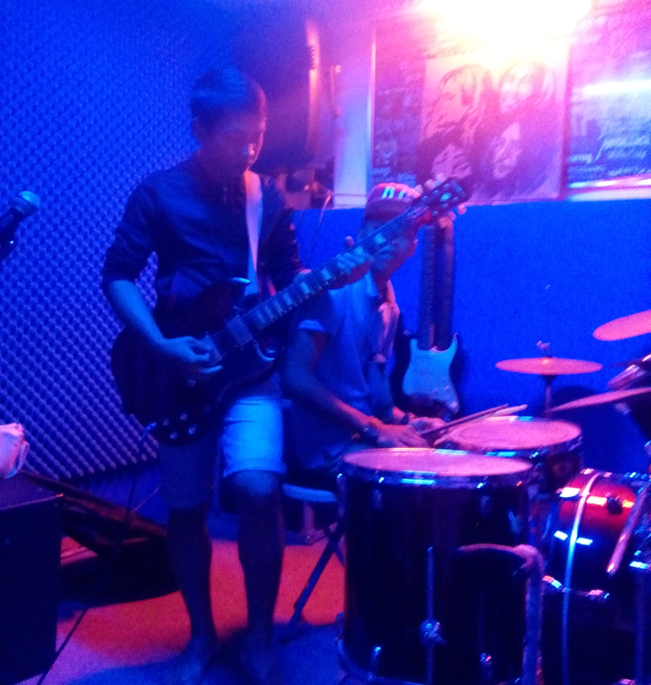
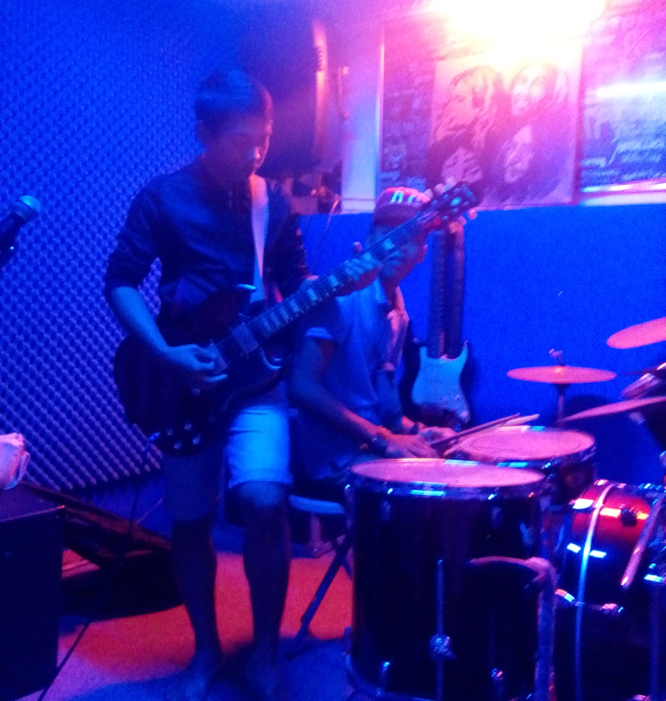
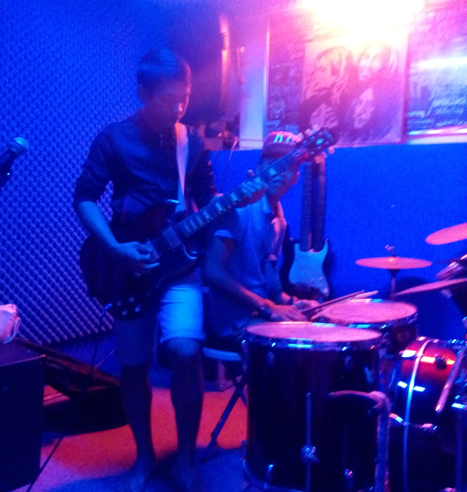

My Photos

 

BS in Information Technology @ MSU-TCTO
I am an enthusiastic and determined Bachelor of Science in Information Technology student, majoring in Network Systems at MSU-TCTO. My academic journey is fueled by a deep interest in the ever-evolving world of technology, especially in understanding the backbone of networks and how systems interact to support modern digital infrastructure.
My willingness, dedication, and perseverance in pursuing this course reflect my strong commitment to mastering the complexities of IT. I constantly challenge myself to stay updated with emerging trends, programming practices, and network solutions. Each lesson and project brings new opportunities to grow and test my limits.
I believe that technology has the power to transform lives, and I aim to contribute meaningfully by developing systems and solutions that address real-world problems. Whether it's designing efficient networks, securing data, or creating user-friendly applications, I am determined to make a positive impact through innovation and purpose.

📘 Facebook: Jhonie A. Julbati
📧 Email: jhoniejulbati03@gmail.com